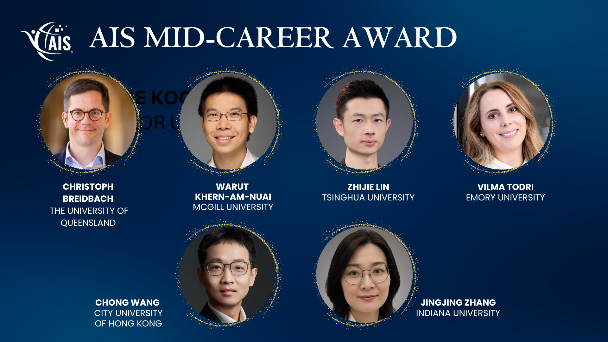

Our paper Facade of Trust: The Impact of Adopting AI-Enhanced Profile Pictures on Trust — joint work with Sijia Ma, Tao Lu, and Xiaoquan (Michael) Zhang — has been accepted at Information Systems Research. Congratulations to all co-authors, and sincere thanks to the senior editor and review team for their guidance in improving this study.
City University of Hong Kong
Alex WANG
王翀
I am Alex WANG. My research investigates how modern information technologies shape the ways people create, share, and use information — and how these changes reshape social and economic exchanges. I am currently a Professor at the College of Business, City University of Hong Kong.
Highlights
Honored to receive the AIS Mid-Career Award from the Association for Information Systems. A deeply meaningful recognition at this stage of the academic journey.
